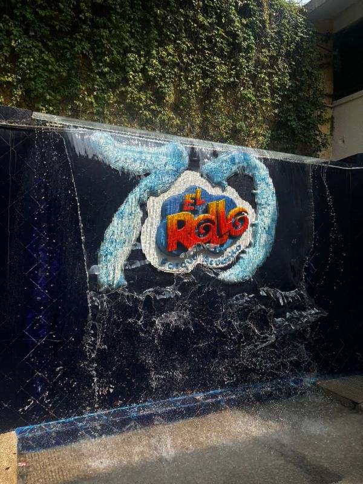
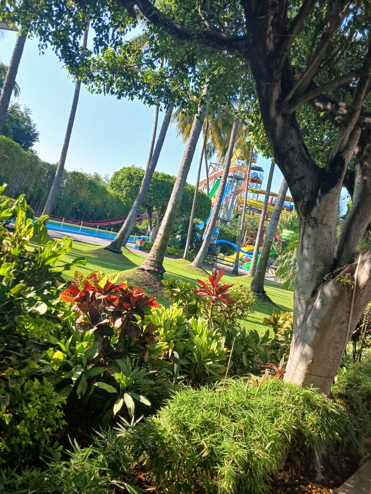

📸 Galería de Imágenes


🏊♂️ Reseña Histórica y Atracciones
El Rollo es considerado el parque acuático más grande e importante de América Latina. Su historia comenzó a mediados del siglo XX, en 1954, y debe su icónico nombre a una antigua torre de vigilancia cilíndrica del siglo XVI (conocida popularmente como "El Rollo"), la cual fue construida por orden de Hernán Cortés para vigilar la zona y que hoy en día se conserva en la entrada del parque como Patrimonio Cultural de la Nación.
A lo largo de las décadas, este destino se ha transformado en un gigante del entretenimiento de nivel internacional. Cuenta con una extensión de más de 30 hectáreas divididas en cuatro secciones principales que albergan alrededor de 40 atracciones. El parque ofrece desde espectaculares toboganes de alta velocidad y albercas de olas con tecnología de punta, hasta áreas infantiles temáticas, islas de descanso, un río lento y zonas residenciales con opciones de hospedaje en hotel o campamento.